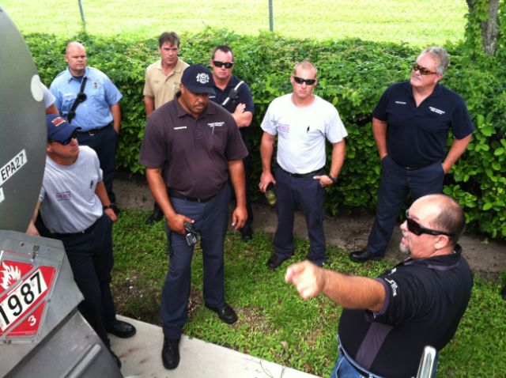
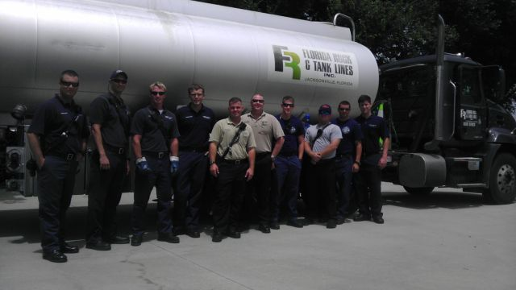
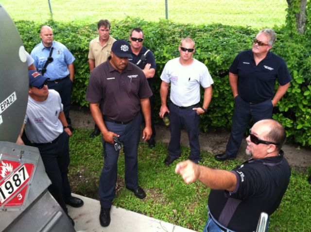
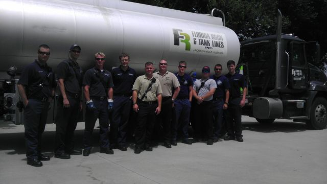
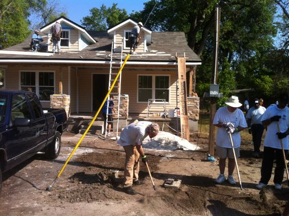
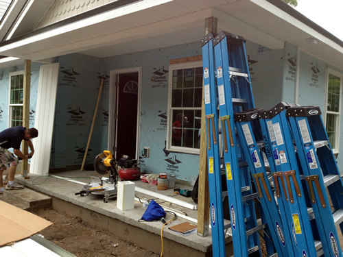

Each year, Florida Rock & Tank Lines, Inc. participates in an educational program for young drivers to teach them about the blind spots around large trucks known as the “No Zone”.

For three consecutive Thursday’s in July, Tampa Driver Trainer Jorge Chavez and Regional Safety Supervisor Patrick Tornwall visited the Manatee County Fire Department Training Center. They conducted training sessions on emergency response and accident recovery with petroleum tankers. Multiple groups of firefighters from municipalities around Manatee County received instruction about the safety features of gas tankers and how to safely work with an accident scene that involves a fuel spill.


Each year, Florida Rock & Tank Lines, Inc. participates in an educational program for young drivers to teach them about the blind spots around large trucks known as the “No Zone”.
Employees from the Florida Rock & Tank Lines, Inc. Home Office in Jacksonville and Florida Rock & Tank Lines, Inc. Jacksonville terminal volunteered at Habijax. They had a good day helping a great cause, while gaining valuable experience installing vinyl siding. Thanks to all who participated.

